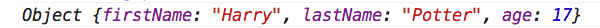
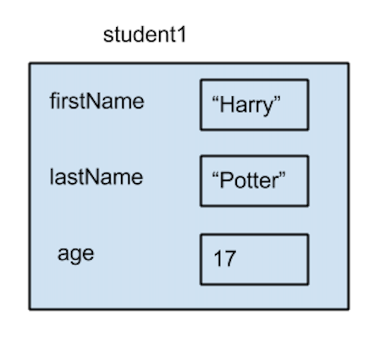
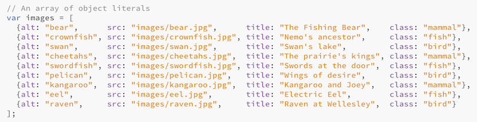

Create Objects with a Constructor
When we introduced objects earlier, we discussed how even
primitive data types such as numbers and strings are objects in Javascript. Other examples
are the Date object we saw today, the Array object (next lecture),
and all the objects of the DOM model (document and its children).
What all these objects had in common is the fact that
they were already defined inside the Javascript language or the browser application, and we
simply used them. However, because Javascript is a powerful programming language, it allows us
to create our own objects.
You can copy the following code in the console of the browser to execute it.
var student1 = new Object(); student1.firstName = "Harry"; student1.lastName = "Potter"; student1.age = 17; console.log(person);
The result you will see is the following:
Let's see what the code does. In the first line, we declare a variable that will be storing
an object, by invoking a special kind of function, called constructor. When we created
dates, we also used the constructor for dates, new Date().
We know that we're using a constructor, because of the special keyword new.
You might remember that when we declared variables before, we likened the process as one of storing a value in a box with a label. The role of the constructor is to create a special kind of box, that allows us to store many other values (properties) inside the box, instead of only one value at a time.
Then, in the following three lines, we added three properties to this object: firstName,
lastName and age by also assigning them values. Printing the
object on the console shows how all this information is now stored inside the variable
person.
Visually, we can represent how this variable is stored in the computer memory, as shown below:
Object Literals
There is another (more compact) way for creating Javascript objects through the use of the object literal notation.
Concretely, the example we just saw can be rewritten in this way:
var student1 = {firstName: "Harry", lastName: "Potter", age: 17}
If you copy and paste this in the console, you will get the same object as before.
Definition: An object literal is a list of zero or more pairs of property names and associated values of an object, enclosed in curly braces ({}).
We are not limited to simple objects like the one above, we can create objects that are composed of other objects. Let us see an example:
var hogwartsHouses = {gryffindor:
{founder: "Godric Gryffindor", mascot: "lion", value: "courage"},
hufflepuff:
{founder: "Helga Hufflepuff", mascot: "badger", value: "hard work"},
rawenclaw:
{founder: "Rowena Rawenclaw",mascot: "eagle",value: "intelligence"},
slytherin:
{founder: "Salazar Slytherin", mascot: "serpent", value: "ambition"}
}
In this example, the object hogwartsHouses has four properties and each of them
has as a value an object. Running this code on the console and accessing the properties, will verify
this fact:
Why Objects?
Objects can be used to pack in one entity multiple values that belong together. We can then write Javascript programs to do something with these values. The example we'll work with for class activities, uses objects to store all information about animals.
The thumbnails above were dynamically added to the webpage, by using the data in the list of objects shown in the code excerpt below:
The Wendy Wellesley shopping site in HW7 and HW8 makes also a heavy use of object literals. We will also encounter objects when studying the jQuery library.
JSON
JSON (JavaScript Object Notation) is the most popular open format for transmiting data objects consisting of property/value pairs over the Web. It uses the Javascript object literal notation to represent objects and it can be parsed by every programming language. It can only contain properties, not method definitions.
All major websites use JSON to transmit data from their servers to the clients. Here are two examples:
- Facebook uses JSON to transmit data from the Graph API. Here is the information for the page of Barack Obama in JSON.
- Google uses JSON to transmit data from all of its services. Here is an example of Google Books API that has information about all published versions of Pride and Prejudice.
Advanced Material: Adding Methods
In addition to adding properties to an object on the fly, we can also define methods for it, as shown below:
// define a method
student1.tell = function(){return "I'm " + student1.firstName + " " + student1.lastName + ".";}
// invoke the method
student1.tell()
Notice that we have to go through two steps: defining the method, and then invoking it.
When we invoke it, we must include parantheses after the method name. As you know,
methods are actually functions, but to invoke them we always need an object, so that we
can use the syntax: objectName.methodName()
When we define an object literal, we can also include the method definition, as shown in the example below:
var student1 = {firstName: "Harry", lastName: "Potter", age: 17,
tell: function(){return "I'm " + this.firstName + " " + this.lastName + ".";}
}
In the screenshot below, notice the difference between using the method name without and with parentheses.

Finally, you might have noticed that in the latter method definition, instead of
writing student1.firstName, we wrote this.firstName,
but we got the expected result when executing the code. The variable this,
is a special variable to refer to the object within its methods. We will use it
often in the weeks to come.